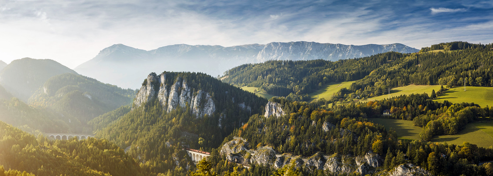

Murau – 96-os úton északnak Gröbming felé – Sölkpass 1788 m. – Erzherzog-Johann-Straße – St. Nikolai i. Sölktal – Gröbming – jobbra G320 – Prüggnél balra B145 – Bad Mitterndorf – Bad Aussee előtt balra Hallstadt felé – Obertraun – Hallstadt – maradj a tóparton, majd a vasút keresztezése után Görbnél ismét a B145 – Bad Goisern – Bad Ischl – Mitterweisenbachnál balra térj le a B153-ra – Weissenbach am Attersee – a tóparton fordulj jobbra a B152-re – Steinbach am Atterseenél fordulj jobbra a Grossalmstrasse-ra, L544 – Neukirchen – Eben – Altmünster – Traunsee tópart – balra a B145-re – keresztezed az A1-et – Unterkriech – Alm – keresztezed a B1-et, innen B143 egyenesen – Ungenach előtt balra tartasz B143 – Ampfwang – Eberschwang – Ried im Innkreis Ried im Innkreis – L508 Lohnsburg felé – Lohnsburg – Schlag után jobbra a 1061-re – Sankt Johann am Walde – balra L503 – Maria Schmolln – Schalchen – Mattighofen – B147 – Munderfing – Freiburg – Freiburgnál jobbra délnek a B1-en – jobbra lesz a Wallersee Henndorf am Wallerseenél balra tartunk az L241-en – a Thaigau kihajtónál keresztezzük az A1 autópályát – Elsenwangnál jobbra B158 – 2 kilométer uán balra Weistalstrasse L107 – Ebenau – Weistalstausee – a tó vége felé balra az L209-esen egy kitérő Gaissau felé – Gaissau – Krispl – Seefeldmühle-nél balra vissza az L107-re – Hallein – keresztül a városon és fel a hegyre majd balra tovább – Bad Dürnberg – német határ – Rossfeld Ringstrasse (fizetős panorámaút) – Obersalzbergnél balra – az út végén balra Berchtesgaden felé – Berchtesgaden Bechtesgaden – nyugat felé B305 – Im Tal Ramsau felé – Ramsau – B21-re balra Lofer felé – osztrák határ – tovább a B178-on – Lofernél be a városba (elkerülendő az alagutat) – vissza a B178-ra St. Johann i. Tirol felé – Waidring előtt balra letérni a párhuzamos mellékútra – Waidring – Niedersee felé – megálló a tóparti vendéglőnél Restaurant Pillersee – St. Ulrich am Pillersee – Rosenegg – jobbra a B164-re – Sankt Johann i. Tirol – balra a B178-ra, majd jobbra Wörgl felé – Söll után balra a Brixental felé – B170 Kitzbüchel felé – Hopfgarten – Westendorf – Kirchberg i. Tirol – Kitzbühel – jobbra a B106-oson Mittersill felé – Jochberg – Mittersill (Innen egy kitérővel elmehetünk Krimml felé Gerlosig és vissza a Krimmli-vízesést és a Gerlos Alpenstrasset megnézni). Mittersill – Felbertauern Panoramastrasse B108 – Felbertauern-alagút (fizetni kell az áthaladásért) – Gruben – Matrei – Huben – Lienz – Lienz előtt jobbra Sillian felé – Leisach után jobbra fel az L324-re – Bannberg – Schrottendorf – Oberthal – Assling – Bichl – Kosten – Burg – Vergein – Oberried felé jobbra – Unterried – Mairwiesen – Anras – Asch – vissza a B100-ra jobbra Sillian felé – Tassenbachnál balra B111 Kartitssch felé – KArtitsch – Obertilliach – Maria Luggau – Liesing – St. Jakob i. Lesachtal – Kötschachnál északnak Oberdrauburg felé a B110-en – a vasút után a B100-on balra – Dölsachnál B107-re jobbra Winklern felé – Winklern – Heiligenblut – Grossglockner Hochalpenstrasse (fizetős útvonal) – Ferleiten – Fusch a. d. Glocknerstrasse – Bruck a. d. Glocknerstrasse – Seeuferstrasse – B311 Zell am See Zell am See – Saalfelden a B311-en – Saalfeldennél jobbra B164-re Bishofshofen felé – a vasút előtt balra B159 Salzburg felé – Bishofshofen – jobbra a B99-re Radstadt felé – Hüttau – keresztezzük az A10-et – Eben – Radstadt – a B99-en maradva jobbra Mauterndorf felé – Untertauern – Obertauern – Tweng – Mauterndorf – jobbra tartva a B99-en maradunk egészen Kremsbrücke-ig – Kremsbrücke-nél balra L19-es Innerkrems felé – Innerkremsnél jobbra a Nockalmstrasse-re (fizetős út) – a Nockalmstrasse másik végétől 1 kilométerre Ebene Reichenauban van benzinkút, ehhez jobbra kell menni – egyébként balra B95 Predlitz felé Turracher Strasse – Turrach – Predlitz – jobbra a B97-re – Stadl – St. Ruprecht – Murau 1050 km
